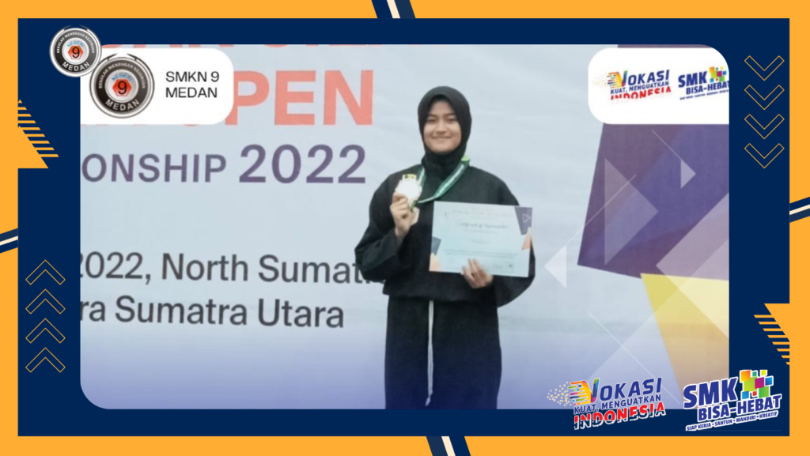

Raisya Azhara raih juara 3 pada ajang Pencak Silat Insya Open Championship 2022
Selamat kepada Raisya Azhara, siswi SMKN 9 Medan Kelas XI TKJ 4 yang berhasil meraih juara 3 pada ajang Pencak Silat Insya Open Championship 2022. Prestasi yang diraih Raisya Azhara patut diapresiasi dan diacungi jempol, mengingat ajang ini merupakan kompetisi yang sangat bergengsi di bidang olahraga pencak silat.
